数据库系统：从文件持久化到 ACID 与向量检索
课程：2026 春季学期《操作系统原理》
讲师：蒋炎岩（jyy）
官方课程主页：https://jyywiki.cn/OS/2026/
官方讲义：https://jyywiki.cn/OS/2026/lect27.md
视频来源：Bilibili BV1eqEA6JEZA
版权说明：课程讲义与幻灯片归蒋炎岩所有，采用 Creative Commons BY-NC 4.0 许可；本电子书是对课堂讲授的书面化重构，保留出处与许可说明。
导语：应用程序的数据最终都是数据结构
(参考时间: 00:00)
上一讲把文件系统理解为“磁盘上的一个数据结构”：UNIX 文件系统要保存一棵目录树或目录图，并且必须在块设备上实现它。除了树和图本身，持久化系统还要解决两个额外问题：
- 文件系统的 crash consistency；
- 应用程序自己的 crash consistency。
系统可能在任何时刻断电。重启后，最近的少量操作可以丢失，但整个数据结构不能损坏，并且必须能够恢复到一个合法状态。
这一讲顺着文件系统继续向后走。既然文件系统可以持久保存数据，那么应用程序应该怎样保存自己的数据？从小型课程网站到教务系统，再到服务全国乃至全球用户的数据库，持久数据的方法会如何演化？
flowchart LR
A["应用程序"] --> B["文件与目录"]
B --> C["文件系统数据结构"]
C --> D["块设备"]
D --> E["持久化存储"]
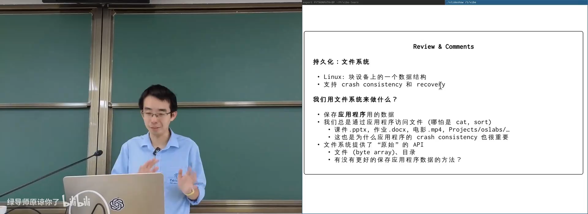
📷 文件系统把块设备抽象成可恢复的目录图
回到原视频 (00:00:10)
1. 持久保存应用数据
1.1 应用程序是物理世界过程的投影
(参考时间: 03:00)
讲师用一句话概括软件：
软件是物理世界过程在信息世界中的投影。
这个投影通常是有损的。现实世界包含人的情绪、上下文以及无法完整记录的信息，而软件只能保存其中有限的一部分。即便如此，软件仍然天生具有持久保存数据的需求：
- 个人信息和学籍；
- 订单与支付记录；
- 日志、维护记录和业务状态；
- 课程、成绩、聊天与用户行为。
这些数据的共同本质，是对某个数据结构进行创建、读取、更新和删除，也就是 CRUD。文件、数据库、配置、聊天记录，看起来是完全不同的产品，背后都是数据结构的维护问题。
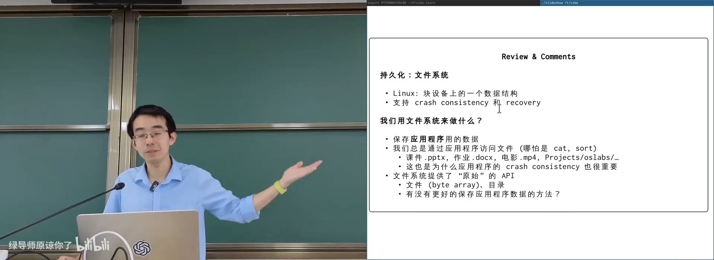
📷 真实应用中的一次点击最终都会转化为数据结构操作
回到原视频 (00:02:20)
一个典型例子是学校的教务系统。教师、管理员和学生看到不同界面，也拥有不同的权限：
- 教师可以查看教学班、周历和考核信息；
- 学生可以查看自己的选课列表；
- 不同角色只能修改允许修改的字段。
讲师在演示中打开了操作系统课程的教学班。授课类型等字段可以编辑，而考核方式等危险字段会禁止修改。页面上的每一次配置，最终都对应后台数据结构中的一次更新。
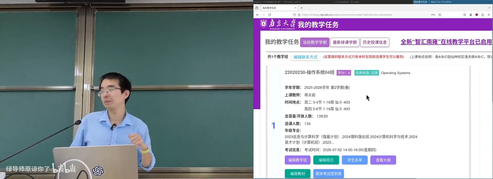
📷 教务系统把课程、教学班、周历和权限组织成数据结构
回到原视频 (00:04:10)
📷 权限控制决定哪些字段能够被修改
回到原视频 (00:05:20)
1.2 连 PPTX 也是一个数据结构
(参考时间: 06:00)
人们通常不把演示文稿当成数据库，但 PPTX 本质上就是一棵树形数据结构。它遵循 Office Open XML 标准，真实格式是一个 ZIP 容器，内部包含 XML、媒体文件和布局描述。
可以直接执行：
file lecture.pptx
unzip lecture.pptx -d lecture_unpacked
find lecture_unpacked/ppt/media -type f
解包后可以看到：
- 每一页幻灯片对应的 XML；
- 幻灯片母版和版式；
- 图片、字体和其他媒体资源；
- 页面上每个对象的位置和样式。
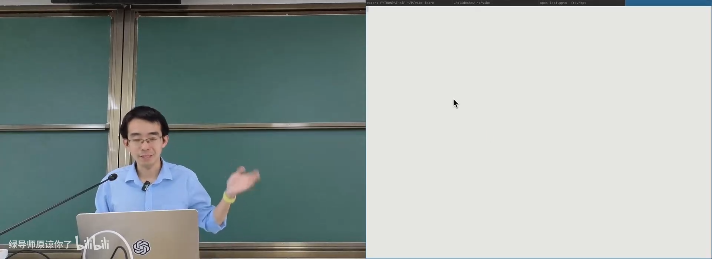
📷 PPTX 既能被办公软件打开，也能作为 ZIP 文件解析
回到原视频 (00:06:30)
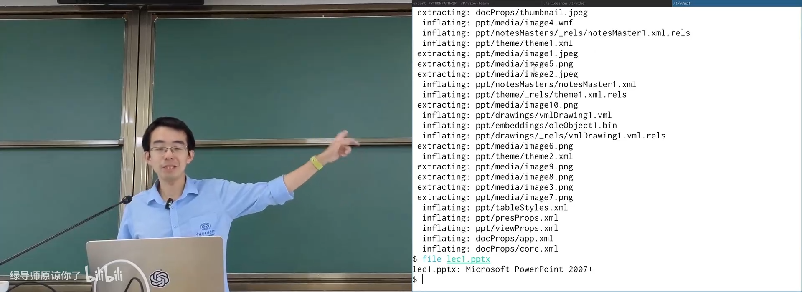
📷 解包后可以从 ppt/media 中直接取出原始图片
回到原视频 (00:07:00)
这也意味着，PPTX 可以被程序直接修改。课堂演示中，讲师打开一个 Coding Agent，让它批量修改演示文稿中的文本。页面标题和正文被替换为英文，其他结构保持不变。
flowchart TD
PPTX["PPTX 文件"] --> ZIP["ZIP 容器"]
ZIP --> SLIDES["Slides XML"]
ZIP --> LAYOUT["Layouts / Masters"]
ZIP --> MEDIA["图片与媒体"]
SLIDES --> TEXT["文本结构"]
SLIDES --> SHAPES["对象与位置"]
这种修改方式简单直接，但也暴露出问题：XML 不一定规整，对复杂文档直接做文本替换并不可靠。更稳妥的做法是使用 Office 自动化接口或具有结构化语义的 API。课堂的判断不是“所有 XML 都必须手工改”，而是：只要一个产品能够被还原为数据结构，它就可以被查询、分析和自动化编辑。
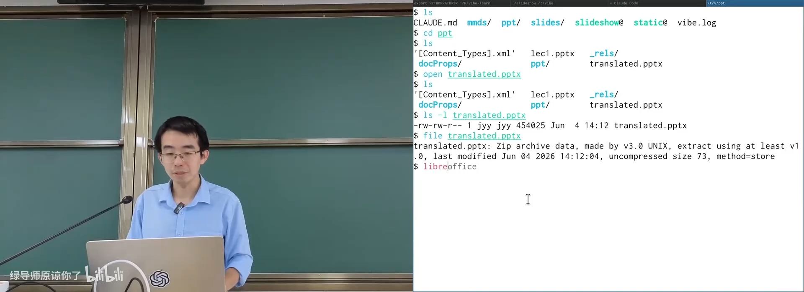
📷 Coding Agent 可以操作演示文稿背后的结构化数据
回到原视频 (00:08:20)
1.3 方法一：Everything is a File
(参考时间: 09:30)
如果要在 UNIX 上实现一个教务系统，最直接的方法是使用目录和文件：
ehall.nju.edu.cn/teacherJxrwApp/22020230/4
├── enrollment
│ ├── 231220001.md
│ ├── 231220002.md
│ └── ...
├── metadata.json
├── syllabus
│ ├── 1-intro.md
│ └── ...
└── textbook
└── 1-ostep.md
每个学生、课程或选课记录都可以对应一个目录或文件。符号链接还能表达“引用”关系。例如，选课目录中的学生链接可以指向学生主目录：
enrollment/231220001 -> ../../students/231220001
学生更新邮箱或手机号后，通过链接读取到的新信息会自动同步，不需要复制第二份。
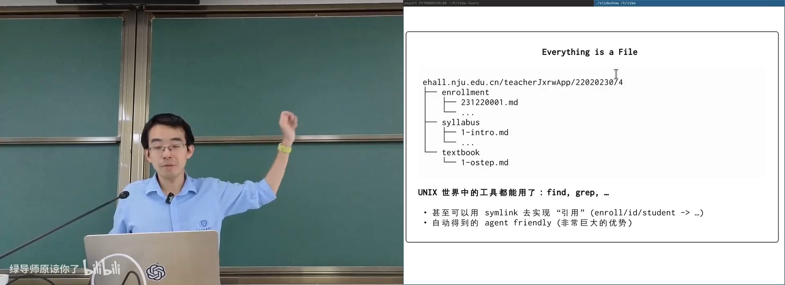
📷 用目录、文件和符号链接直接表达业务对象及引用关系
回到原视频 (00:10:00)
这种方法具有明显优势：
find、grep、sort、xargs等 UNIX 工具直接可用；- 文件格式透明，人和程序都容易检查；
- Coding Agent 天然熟悉文件系统；
- 可以利用符号链接、权限、原子 rename 等既有机制。
flowchart LR
ROOT["教务系统目录"] --> STUDENTS["students"]
ROOT --> COURSE["course/22020230"]
ROOT --> ENROLL["enrollment"]
ENROLL --> LINK1["231220001 -> 学生目录"]
ENROLL --> LINK2["231220002 -> 学生目录"]
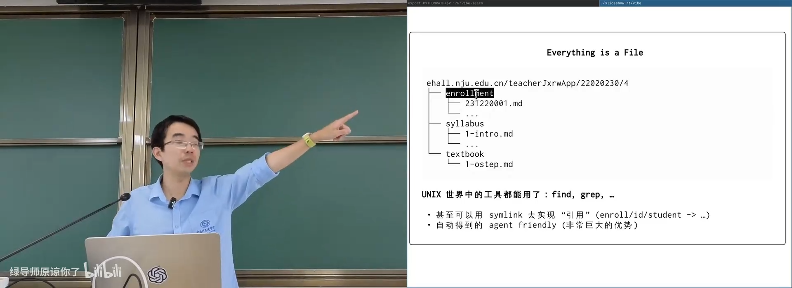
📷 符号链接是一个可被文件系统直接理解的对象引用
回到原视频 (00:12:50)
1.4 课程网站与 Online Judge
(参考时间: 13:50)
课程网站是文件系统方案的典型应用。所有学生提交都存放在固定目录中：
/var/www/filerecv/OS2026/M1/[stuid]/
2026-04-04-19-26-43.tar.bz2
2026-04-04-19-26-43.tar.bz2.result
提交程序只负责把压缩包放入目录。另一个监听程序不断扫描：
- 存在提交包，但不存在对应
.result； - 说明该提交尚未评测；
- 将压缩包送入 Online Judge；
- 评测完成后，把结果写回同名
.result文件。
统计提交结果可以直接使用 Shell：
cat M5/*.result | grep 'Accepted' | wc -l
重新评测也十分简单：
echo M5/**/*.result | xargs rm
监听程序发现缺少结果，就会重新把它送入评测队列。
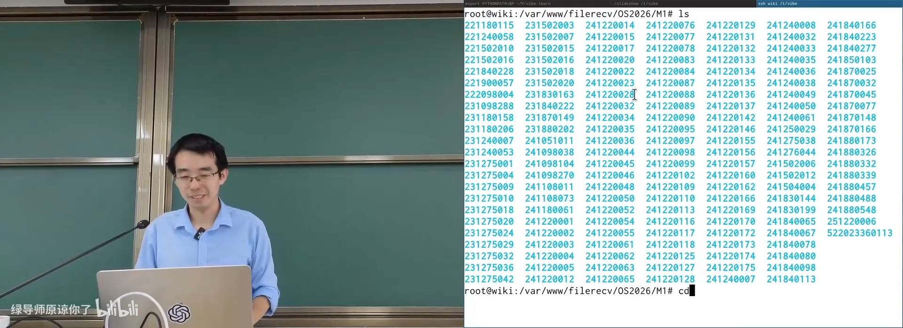
📷 课程提交目录同时包含提交包和评测结果
回到原视频 (00:14:10)
📷 Shell 命令可以直接统计或清理提交结果
回到原视频 (00:15:20)
sequenceDiagram
participant Student as 学生
participant Submit as make submit
participant FS as 文件系统
participant OJ as Online Judge
Student->>Submit: 上传压缩包
Submit->>FS: 写入 tar.bz2
OJ->>FS: 扫描缺少 .result 的提交
OJ->>OJ: 编译和评测
OJ->>FS: 写入 .result
Student->>FS: 查看评测结果
1.5 文件方案的代价
(参考时间: 17:20)
文件系统很好用，但它不是免费的：
- 多文件写入没有全局原子性。 批量导入 100 个学生的选课信息时，如果写到第 50 个文件系统崩溃，数据就处于半完成状态。
- 需要自行实现 recovery。 应用必须像 Git 一样采用 append-only 结构，或者自己执行类似 FSCK 的一致性修复。
- 存在读写放大和额外元数据开销。 路径解析、权限检查、inode 更新、访问时间和修改时间等，可能都是应用并不需要维护的信息。
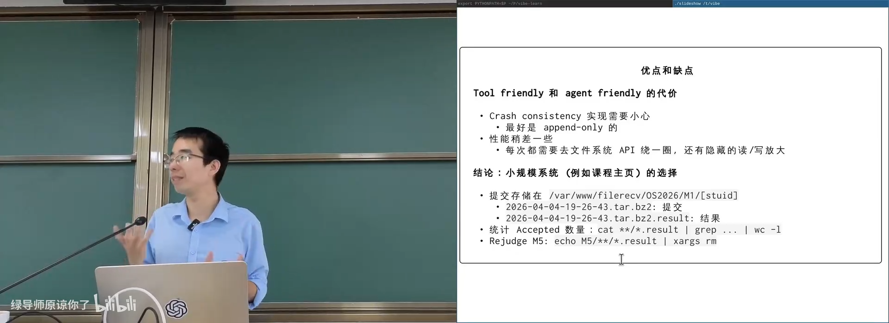
📷 一次业务操作可能被拆成多个文件写入，中途崩溃会留下不一致状态
回到原视频 (00:17:40)
这不是说文件方案不可靠，而是它的可靠性边界在应用层。课程网站可以使用这种方案，因为：
- 云 SSD 和虚拟机通常相当可靠；
- 即使偶发丢失一个
.result，学生重新提交即可； - 小规模系统的开发效率远比极致的存储效率重要。
flowchart TD
OP["批量导入 100 个学生"] --> W1["写入文件 1"]
W1 --> W2["写入文件 2"]
W2 --> GAP["系统崩溃"]
GAP --> BAD["前 50 条已存在，后 50 条缺失"]
BAD --> FIX1["应用层 FSCK"]
BAD --> FIX2["临时目录 + 原子 rename"]
BAD --> FIX3["append-only + replay"]
1.6 方法二：直接在文件上构建数据结构
(参考时间: 19:40)
既然磁盘是一个字节数组，文件也是一个字节数组，那么我们可以把文件当成虚拟磁盘，在其上重新实现数据结构。
一个微型的教务数据库可以在文件头部放一个 Superblock：
struct superblock {
struct student *students;
struct course *courses;
struct enrollment *enrollments;
size_t count;
};
struct student {
char stuid[16];
char name[32];
struct student *next;
};
struct course {
char cid[16];
char title[64];
struct course *next;
};
实现 CRUD 的方式，与数据结构课中的链表、哈希表和树没有本质区别：
void enroll(struct student *s, struct course *c) {
struct enrollment *e = allocate();
e->student = s;
e->course = c;
e->next = database->enrollments;
database->enrollments = e;
}
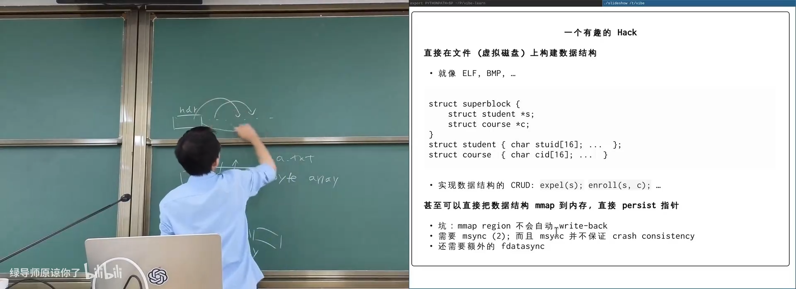
📷 文件头部可以像 ELF 一样保存 Superblock 和关系数据
回到原视频 (00:21:00)
1.7 mmap：把持久文件映射成内存指针
(参考时间: 22:00)
如果每次都把数据库文件映射到同一个虚拟地址，那么内存中的绝对指针就可以被持久化。下次打开数据库时，所有指针仍然指向相同地址。
void *base = mmap(
FIXED_ADDRESS,
file_size,
PROT_READ | PROT_WRITE,
MAP_SHARED,
fd,
0
);
struct superblock *db = base;
课堂中的演示程序直接创建了学生链表。退出并重新打开后，学生记录依然存在；查看二进制文件时，甚至可以看见学生姓名。
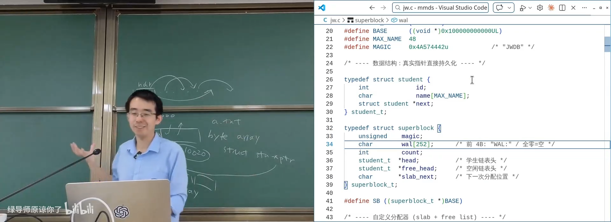
📷 把数据库文件映射到固定地址后，指针本身也可以被持久化
回到原视频 (00:23:20)
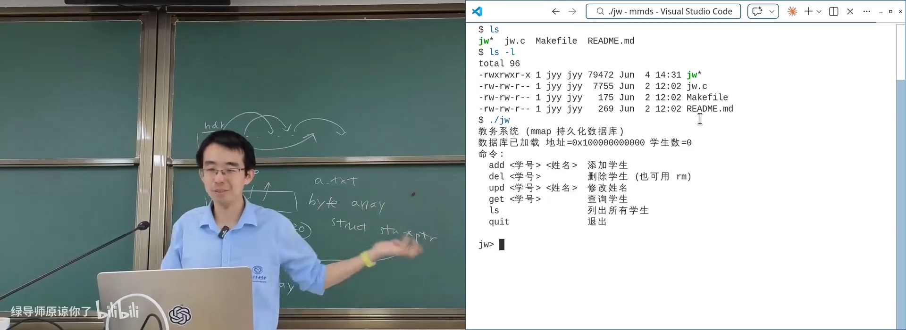
📷 进程退出后重新打开数据库，链表数据仍能恢复
回到原视频 (00:25:20)
flowchart TD
FILE["database.bin"] --> MAP["mmap 到固定虚拟地址"]
MAP --> SUPER["Superblock"]
SUPER --> HEAD["Student *head"]
HEAD --> S1["Student 1"]
S1 --> S2["Student 2"]
S2 --> NULL["NULL"]
S1 --> FREE["空闲链表分配器"]
1.8 mmap 并不等于 crash consistency
(参考时间: 26:30)
mmap 隐藏了很多复杂度。内存页不会在每次写入后立刻回到磁盘，CPU 缓存中的数据也不会自动变成持久数据：
- 映射区写入默认不一定立即 write-back；
msync只请求同步映射区，不等价于具备持久化保证的fdatasync；madvise用来提示访问模式，不是通用 POSIX 标准，性能和语义都更复杂。
msync(addr, len, MS_SYNC);
fdatasync(fd);
msync 解决的是内存映射与文件之间的同步问题，fdatasync 继续负责把相关数据推到持久存储。要获得可恢复的事务语义，还需要额外的 WAL。
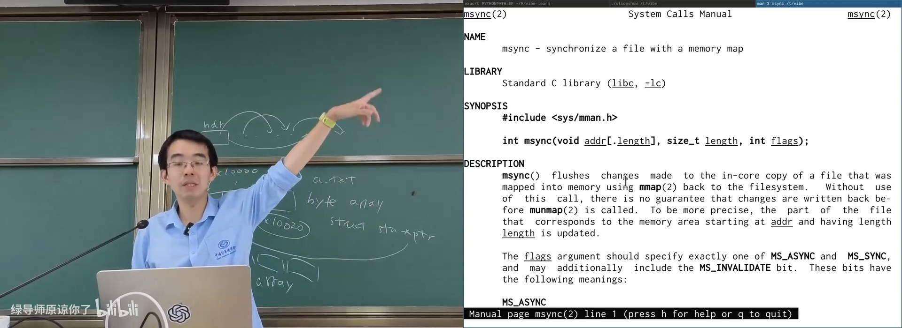
📷 msync、fdatasync 和写回策略共同决定 mmap 数据的持久化边界
回到原视频 (00:28:10)
1.9 在 Superblock 中加入 Write-Ahead Log
(参考时间: 29:30)
课堂中的微型数据库偷懒但有效：在 Superblock 中放置一个很小的 WAL 区域。
struct superblock {
uint32_t magic; // 例如 "jyDB"
char wal[256]; // "add 99 XX"
struct student *head;
/* ... */
};
每次执行操作时，遵循以下顺序：
- 把操作记录写入 WAL；
msync，再用fdatasync确保日志真正落盘；- 执行内存数据结构更新；
- 确认更新落盘；
- 清空 WAL。
sequenceDiagram
participant App as 应用程序
participant WAL as WAL
participant DS as 数据结构
App->>WAL: 写入 add student
App->>WAL: msync + fdatasync
WAL-->>App: 操作已持久
App->>DS: 执行数据结构更新
App->>DS: 确认更新落盘
App->>WAL: 清空日志
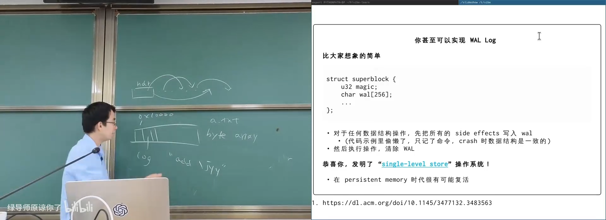
📷 Superblock 中保存的操作日志让崩溃恢复可以重放未完成事务
回到原视频 (00:30:40)
如果系统在更新数据结构后、清空 WAL 前崩溃，重启时直接重放日志；如果日志已经清空，说明事务完成。课堂演示中，讲师直接修改了 WAL 内容：
add 99 XX
重新打开数据库后，恢复代码重放命令，99 号学生出现，WAL 随后被清空。
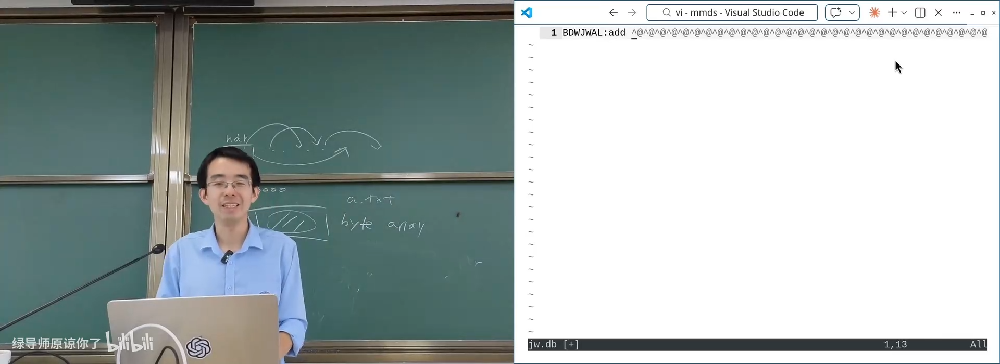
📷 恢复过程重放 WAL，把未完成的操作重新应用到数据库
回到原视频 (00:31:45)
1.10 Single-Level Store
(参考时间: 33:20)
如果把整个程序的地址空间都映射到持久内存，那么进程退出和系统崩溃后，运行状态本身也不会消失。这会得到一种 Single-Level Store 操作系统：
flowchart LR
PROC["进程地址空间"] --> VM["持久内存映射"]
VM --> PMEM["Persistent Memory"]
PMEM --> PROC
PROC --> STATE["进程状态、数据结构、对象图"]
在传统系统中，内存是易失的，进程状态在断电后消失；当持久内存足够成熟时，可以把“内存”和“磁盘”统一成一层持久对象空间。课堂提到的研究问题，就是如何让整个系统的状态自然持久化。
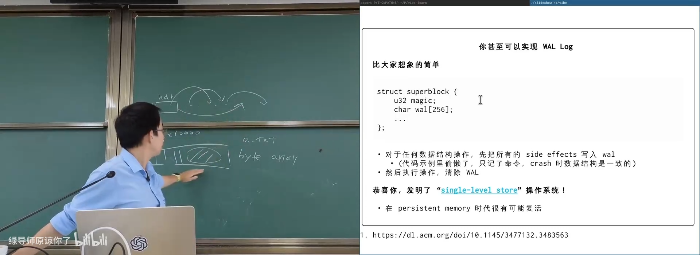
📷 把进程地址空间整体持久化，会通向 Single-Level Store
回到原视频 (00:33:30)
2. 关系型数据库
2.1 我们需要一个“非常非常好的数据结构”
(参考时间: 35:20)
数据库的目标比微型教务系统大得多。一个理想的数据结构需要同时满足：
- 好用：能表达几乎任意业务数据，普通人也能理解和操作；
- 高性能：全校同时选课、全球用户同时聊天也不能崩溃；
- 持久化：系统随时崩溃，磁盘不坏，数据仍然正确；
- 支持 multi-write：一次业务操作涉及多个更新时做到 all-or-nothing。
例如批量导入成绩，不能出现一半学生看见成绩、另一半学生看不到；批量导入选课名单，也不能留下半套记录。
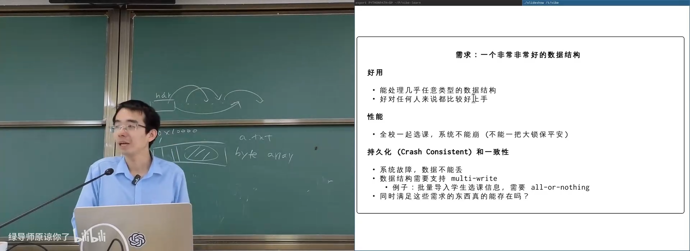
📷 数据库需要同时满足通用性、性能和崩溃一致性
回到原视频 (00:36:20)
flowchart TD
GOOD["理想数据库"] --> USE["好用且通用"]
GOOD --> PERF["高性能、高并发"]
GOOD --> PERSIST["持久化与崩溃恢复"]
GOOD --> ATOMIC["multi-write all-or-nothing"]
USE --> SQL["声明式查询与数据模型"]
PERF --> INDEX["索引、缓存、并发控制、分片"]
PERSIST --> WAL["WAL 与恢复"]
ATOMIC --> TX["Transaction"]
2.2 Pointer Machine 与关系模型
(参考时间: 38:20)
计算机通常被视为 Pointer Machine。内存中的数据结构依赖对象之间的指针：
struct node {
char value[32];
struct node *left;
struct node *right;
};
学生、课程和选课关系也可以用指针表示：
struct enrollment {
struct student *student;
struct course *course;
};
但指针不适合作为跨应用、跨语言、跨机器的公共数据模型。数据库中常见的替代方案是二维表。
flowchart LR
PTR["指针"] --> REL["对象之间的关系"]
REL --> TABLE["关系表"]
TABLE --> ROW["每一行是一个对象或事实"]
TABLE --> KEY["用 ID / Key 表示引用"]
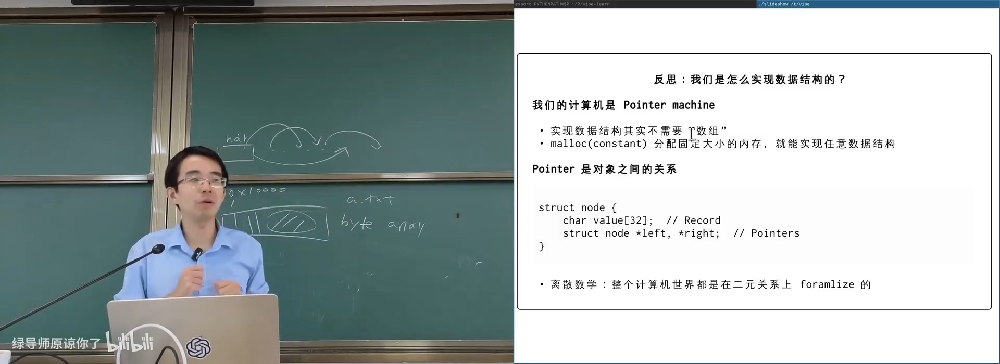
📷 Pointer Machine 通过对象和关系表达世界，数据库用表来表示同样的关系
回到原视频 (00:39:20)
2.3 Everything is a table
(参考时间: 40:20)
关系模型把世界描述成若干事实表。选课系统只需要三类最小事实：
Student(stuid, name, ...)
Course(classid, title, ...)
Takes_Course(stuid, classid, grade, ...)
例如：
| stuid | name |
|---|---|
| 1 | 张三 |
| 2 | 李四 |
| 3 | 王五 |
| classid | title |
|---|---|
| 4 | 操作系统 |
| 5 | 编译原理 |
| 6 | 数据库系统 |
| stuid | classid | grade |
|---|---|---|
| 3 | 4 | 未录入 |
| 3 | 5 | 未录入 |
| 6 | 1 | 未录入 |
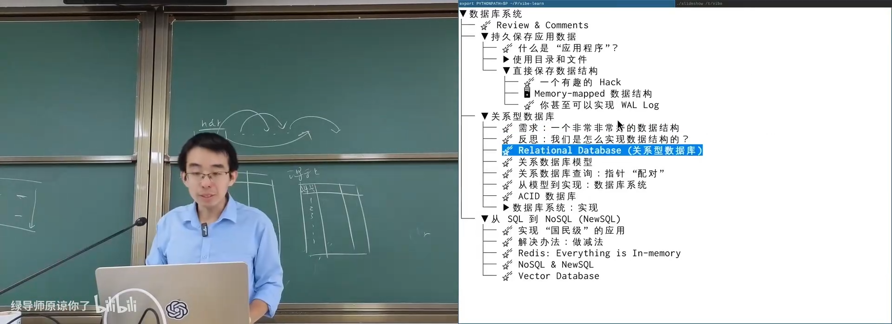
📷 学生、课程和选课被拆成最小事实表
回到原视频 (00:40:30)
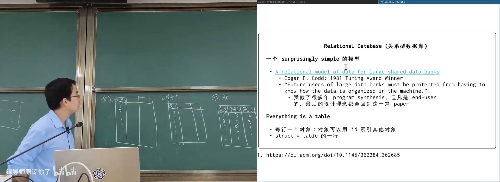
📷 选课表用两个 Key 把学生和课程关联起来
回到原视频 (00:42:30)
这是一种“对象和指针”的另一种表达：
- 表中的一行是对象；
- 主键唯一标识对象；
- 外键表示对象之间的关系；
- 多对多关系被显式拆成中间表。
flowchart LR
STUDENT["STUDENT<br/>stuid PK<br/>name"] -->|enrolls| ENROLL["TAKES_COURSE<br/>stuid FK<br/>classid FK<br/>grade"]
COURSE["COURSE<br/>classid PK<br/>title"] -->|contains| ENROLL
2.4 Join：把事实组合成查询结果
(参考时间: 42:50)
假如要查“选修操作系统这门课的学生”，最朴素的理解方式是：
for each student s:
for each course c:
for each enrollment e:
if e.stuid == s.stuid and e.classid == c.classid:
output (s, c, e)
这就是笛卡尔积后的筛选，也就是 Join 的直观定义。绝大多数组合会被条件过滤掉，因为 stuid 和 classid 都是唯一键。
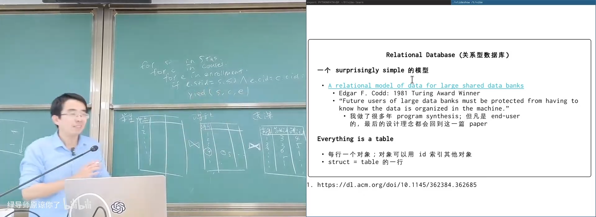
📷 Join 可以被理解成笛卡尔积后按 Key 进行配对
回到原视频 (00:44:10)
SQL 把这种关系运算写成声明式查询：
SELECT Courses.Title
FROM Student
JOIN Takes_Course
ON Student.ID = Takes_Course.ID
JOIN Courses
ON Takes_Course.ClassID = Courses.ClassID
WHERE Student.Name LIKE '张%';
数据库不要求用户写三层循环。用户只说“我想要什么”，执行引擎负责决定怎么高效地得到结果：
- 用主键或索引定位学生；
- 用外键定位选课记录；
- 用课程主键定位课程；
- 过滤姓名前缀；
- 组合最终元组。
flowchart TD
A["Student"] --> J1["按 stuid Join"]
B["Takes_Course"] --> J1
J1 --> J2["按 classid Join"]
C["Course"] --> J2
J2 --> F["WHERE name LIKE '张%'"]
F --> R["Result: Course.Title"]
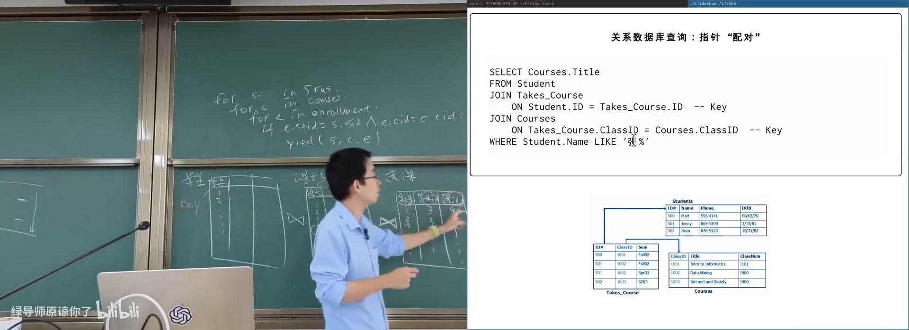
📷 SQL 查询可以表达过滤、连接和投影等关系代数操作
回到原视频 (00:47:20)
2.5 ACID 与 Transaction
(参考时间: 48:40)
关系数据库用 ACID 描述它提供的能力：
- Atomicity：事务中的操作要么全部生效，要么全部不生效；
- Consistency：事务执行前后，数据库满足约束；
- Isolation：并发事务彼此隔离；
- Durability：事务提交后的修改不会因系统崩溃而丢失。
从操作系统课程的角度，可以抓住两个更强的性质：
- Serializability：无论多少事务并发读写，最终效果都等价于某种串行执行；
- Strong crash consistency：系统崩溃也不会损坏数据结构或丢掉已经提交的操作。
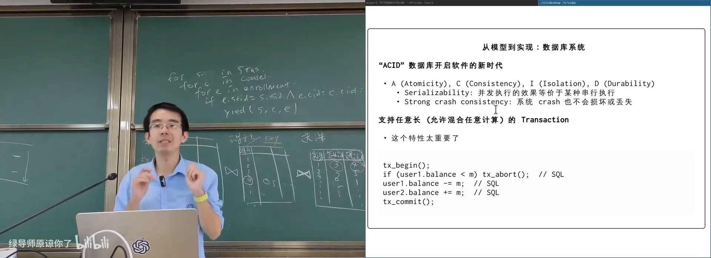
📷 ACID 把稳定性、并发隔离和持久性统一封装在事务接口中
回到原视频 (00:49:30)
最典型的例子是转账：
tx_begin();
if (user1.balance < amount) {
tx_abort();
}
user1.balance -= amount;
user2.balance += amount;
if (some_business_condition_is_invalid) {
tx_abort();
}
tx_commit();
事务中可以执行任意图灵完备的计算，甚至可以 sleep，可以检查复杂业务条件。只要没有提交，前面的修改都可以撤销；一旦提交，所有修改一起生效。
flowchart TD
BEGIN["tx_begin"] --> CHECK{"余额足够？"}
CHECK -- "否" --> ABORT["tx_abort，全部撤销"]
CHECK -- "是" --> DEBIT["user1.balance -= m"]
DEBIT --> CREDIT["user2.balance += m"]
CREDIT --> COMMIT{"tx_commit"}
COMMIT -- "成功" --> VISIBLE["修改原子地对外可见"]
COMMIT -- "失败" --> ABORT
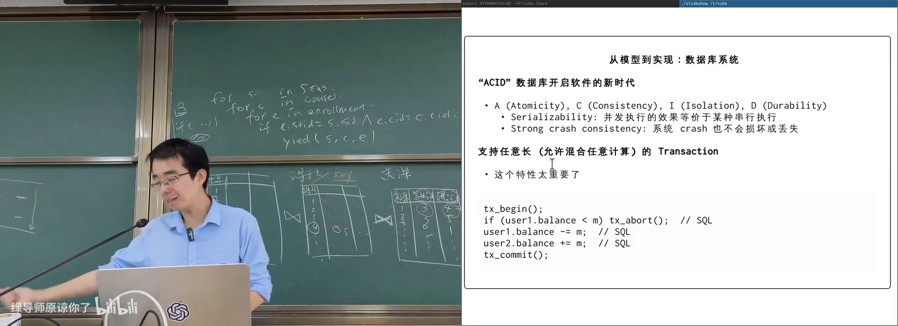
📷 转账事务把多个读写封装成不可分割的业务操作
回到原视频 (00:50:50)
2.6 “一把大锁”为什么仍然快
(参考时间: 51:50)
从使用者的角度看，事务就像一个巨大的锁：
tx_begin()
...
tx_commit()
程序员不需要在每个字段、每张表、每个对象上手工加锁。数据库在后台实现细粒度并发：
- 不同事务可以并行读写不冲突的数据；
- 同一组数据上的冲突由并发控制发现和解决；
- 日志保证崩溃恢复；
- 缓存、索引、分库分表降低访问成本。
flowchart LR
USER["用户看到"] --> LOCK["一个大事务锁"]
LOCK --> ENGINE["数据库执行引擎"]
ENGINE --> ROWLOCK["行锁 / 页锁 / MVCC"]
ENGINE --> WAL["WAL 与恢复"]
ENGINE --> CACHE["缓存与索引"]
ENGINE --> SHARD["分库分表"]
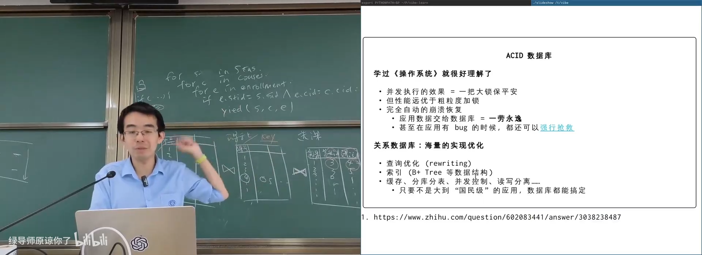
📷 事务在接口上像一把大锁，内部却可以并行且具有高性能
回到原视频 (00:52:30)
2.7 数据库不是“存数据”，而是实现一个系统
(参考时间: 53:40)
数据库系统内部的实现包含很多操作系统与编译器问题：
- 查询重写；
- 执行计划选择；
- B+ Tree 等索引；
- Buffer Pool 和缓存替换；
- 并发控制；
- WAL 与恢复；
- 分区、复制、分库分表。
flowchart TD
SQL["SQL 查询"] --> PARSE["解析"]
PARSE --> PLAN["逻辑计划"]
PLAN --> REWRITE["语义等价重写"]
REWRITE --> PHYSICAL["物理执行计划"]
PHYSICAL --> EXEC["执行器"]
EXEC --> INDEX["索引与存储引擎"]
EXEC --> CONCURRENCY["并发控制"]
EXEC --> WAL["日志与恢复"]
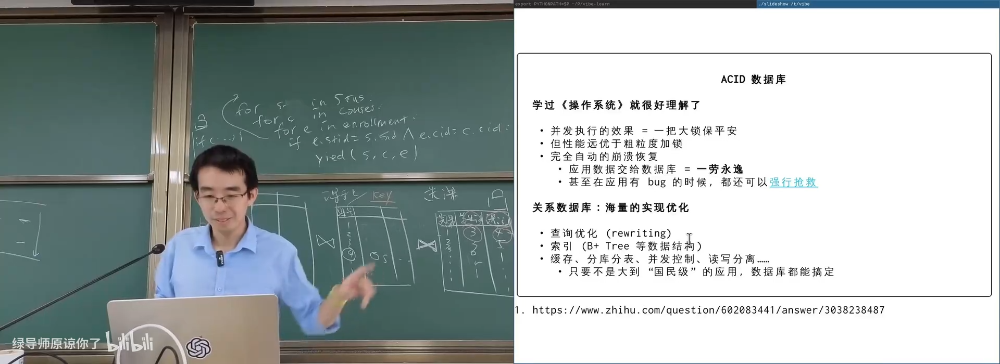
📷 SQL 查询会经过解析、重写、计划选择和物理执行
回到原视频 (00:55:00)
查询优化尤其像编译器。编译器把高级语言反复重写为更高效的机器代码；数据库把关系代数表达式重写为更高效的执行计划。例如，把过滤条件下推，可以大幅减少参与 Join 的数据量。
2.8 并发控制的难点：2PL 与 MVCC
(参考时间: 56:20)
事务可以并发读、写数据库的不同部分，但可能会出现冲突：
T1: tx_begin(); x = 1; may_crash(); y = 2; tx_commit();
T2: tx_begin(); y = 1; sleep(long); x = 2; tx_commit();
T1 先写 X 再写 Y，T2 先写 Y 再写 X。两个事务可能形成 ABBA 死锁。
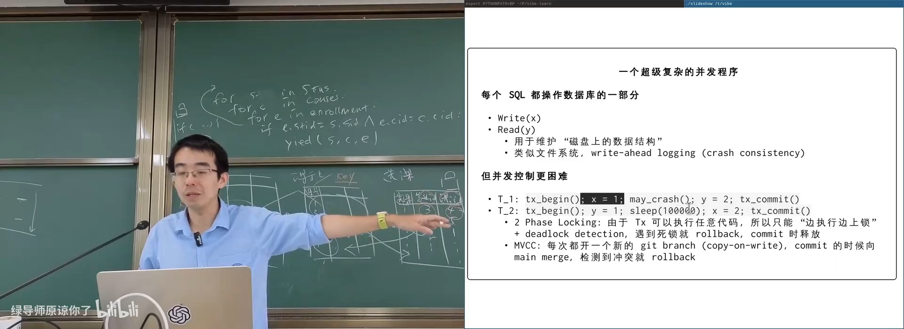
📷 并发事务可能在不同数据上以相反顺序加锁，形成死锁
回到原视频 (00:57:20)
第一种方案是 Two-Phase Locking（2PL）：
- 读数据时加读锁；
- 写数据时加写锁；
- 边执行边加锁；
- 发现锁等待环后选择一个事务回滚；
- 被回滚的事务重新执行；
- 事务提交时释放锁。
flowchart LR
T1["T1: lock X"] --> WAIT["T1: 等待 Y"]
T2["T2: lock Y"] --> WAIT2["T2: 等待 X"]
WAIT --> CYCLE["等待图中形成环"]
WAIT2 --> CYCLE
CYCLE --> VICTIM["选择 T2 回滚"]
VICTIM --> RELEASE["释放 T2 已持有的锁"]
RELEASE --> T1COMMIT["T1 继续并提交"]
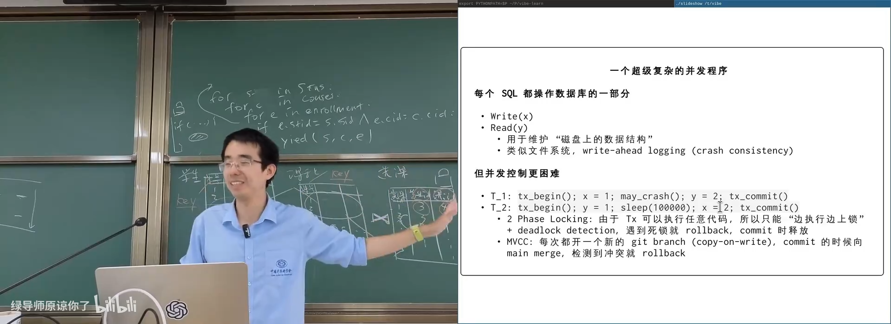
📷 2PL 检测锁等待环，并回滚其中一个事务来打破死锁
回到原视频 (00:58:30)
第二种方案是 Multiversion Concurrency Control（MVCC）。讲师用 Git 分支来类比：
- 数据库当前状态等价于
main； tx_begin()等价于 checkout 一个新分支；- 事务读自己的快照；
- 事务把自己的写入应用到分支；
tx_commit()尝试把它 merge 回main；- 如果没有冲突，多个事务都可以提交；
- 如果修改了同一行且无法自动解决冲突，其中一个事务必须回滚。
flowchart TD
MAIN["数据库 main 快照"] --> T1["T1 branch<br/>write X"]
MAIN --> T2["T2 branch<br/>write Y"]
T1 --> MERGE{"Commit 时 merge 回 main"}
T2 --> MERGE
MERGE -- "无冲突" --> BOTH["两个事务都提交"]
MERGE -- "同一数据冲突" --> ROLLBACK["选择一个事务回滚"]
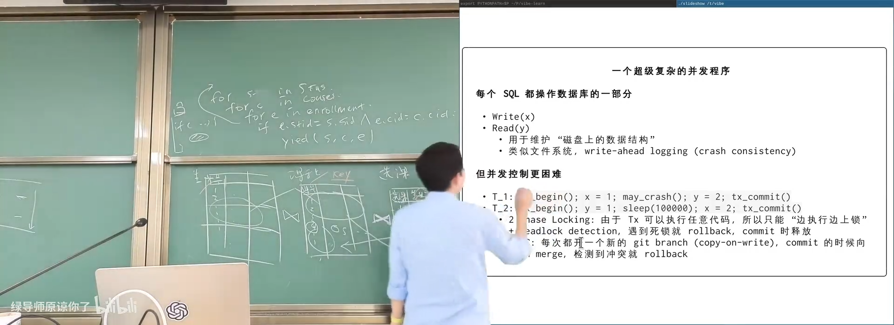
📷 MVCC 用快照和版本关系实现并发，Commit 时才检查冲突
回到原视频 (01:00:30)
数据库不能像 Git 那样让人工解决所有 merge conflict，因为事务中可能包含任意计算。数据库只能根据读集合和写集合检测冲突，必要时回滚整个事务。这正是一个复杂但非常重要的工程问题。
2.9 SQLite：无处不在的小数据库
(参考时间: 01:02:40)
手机设置中的每一个开关都可以持久保存。实现方式并不是为每个偏好创建一个文件再反复 fsync，而是使用一个小型 SQLite 数据库。
SQLite 的特点：
- 是 C 语言实现的一个库，而不是独立数据库服务器；
- 整个数据库通常就是一个文件；
- 支持 SQL、事务和崩溃恢复；
- 零配置，发行版通常自带
libsqlite3.so； - 内嵌在 Android、iOS、macOS、Chrome 等大量应用和系统中；
- 被称为世界上使用最广泛的数据库引擎。
flowchart LR
APP["应用 / 手机设置"] --> LIB["libsqlite3"]
LIB --> DB["单个数据库文件"]
DB --> SQL["SQL 查询与更新"]
DB --> TX["事务 / WAL / Recovery"]
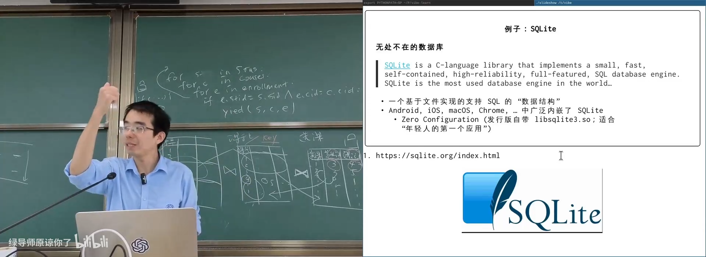
📷 手机设置页面背后常常是一个嵌入式 SQLite 数据库
回到原视频 (01:03:10)
SQLite 让普通应用不必自己处理文件同步、事务提交和崩溃恢复。只要链接一个小型 C 库，就能获得成熟数据库的持久化能力。
3. 从 SQL 到 NoSQL、NewSQL 与向量数据库
3.1 国民级应用与 SQL 的压力
(参考时间: 01:05:00)
微信聊天记录本质上可以是数据库中的一张表：
SELECT *
FROM chat_records
WHERE (sender_id = @user_id1 AND receiver_id = @user_id2)
OR (sender_id = @user_id2 AND receiver_id = @user_id1)
ORDER BY timestamp DESC
LIMIT 10;
这条查询在语义上完全正确。用户打开对话，只看到最近十条消息；数据库负责过滤、排序和截断。
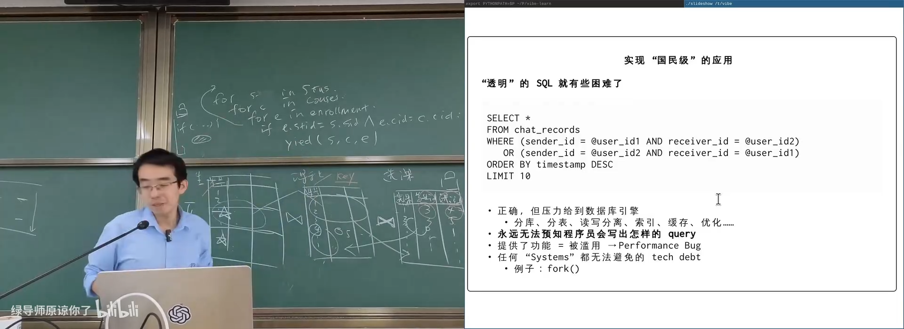
📷 微信聊天记录可以被抽象成一张带发送者、接收者和时间戳的表
回到原视频 (01:05:30)
随着用户规模增长，问题不在 SQL 能不能表达，而在执行成本：
- 分库分表；
- 读写分离；
- 索引设计；
- 缓存；
- 复杂 Join 和排序；
- 查询计划选择。
更麻烦的是，数据库无法预先知道程序会写什么查询。一个订单页面可能涉及几十张表，一次查询需要多层 Join、日期过滤、排序和分页。功能越通用，越容易被滥用。
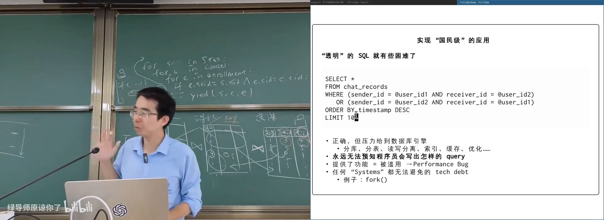
📷 复杂的多表查询会让执行计划成为性能瓶颈
回到原视频 (01:07:50)
flowchart TD
SQL["提供完整 SQL"] --> POWER["表达能力强"]
POWER --> ABUSE["难以预知程序如何写查询"]
ABUSE --> PERF["Performance Bug"]
PERF --> SCALE["数据量增长后不断放大"]
SCALE --> OPS["分库分表、缓存、读写分离"]
OPS --> DIST["最终仍然需要走向分布式"]
这不是某一个程序员的错误，而是任何通用 Systems 都难以避免的技术债。fork() 也曾因为接口过于通用而带来大量实现和使用成本。
3.2 做减法：Key-Value Store
(参考时间: 01:10:00)
如果完整 SQL 太重，可以做减法，只保留一个够用的数据结构：Key-Value Store。
user:{uid} -> User JSON
user:{uid}:like_history -> List
user:{uid}:like_count -> Integer
用户信息可以序列化成 JSON 存到：
user:1001
当一个用户选课或退课时，可以把事件追加到列表：
enroll:2026:user:1001 -> [enroll OS2026, drop OS2026, ...]
需要得到最终选课列表时，从头重放事件；也可以缓存一个“当前选课列表”视图。
flowchart TD
EV1["enroll OS2026"] --> LOG["append-only event list"]
EV2["drop OS2026"] --> LOG
EV3["enroll DB2026"] --> LOG
LOG --> REPLAY["按顺序 replay"]
REPLAY --> VIEW["当前选课列表"]
VIEW --> CACHE["缓存当前视图"]
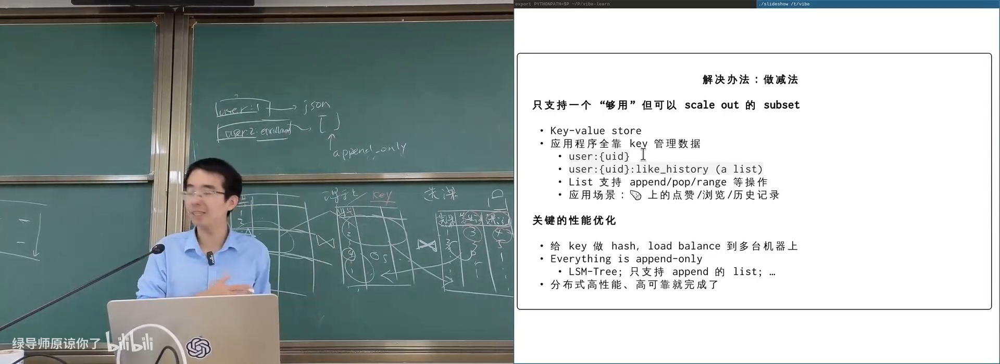
📷 选课与退选可以记录为 append-only 事件，需要时再重放得到当前状态
回到原视频 (01:12:20)
Append-only 结构具有重要优势：
- 通常比“读旧值、计算、写回”更容易实现；
- 更容易保证崩溃一致性；
- 可以并行追加多个日志片段，再拼接起来；
- 点赞、浏览历史和消息流天然适合追加。
3.3 Hash 分片与 LSM Tree
(参考时间: 01:14:00)
Key-Value Store 很容易横向扩展：
shard = hash(key) % number_of_machines
一个足够好的哈希函数会把 Key 均匀映射到大量机器，实现自动负载均衡。由于数据主要是 append-only，存储引擎还可以使用 Log-Structured Merge Tree（LSM Tree）：
- 写入先进入内存 MemTable；
- 同时写 WAL 保证崩溃恢复；
- MemTable 写满后刷成不可变 SSTable；
- 后台合并 SSTable，清除旧版本；
- 读取时从新到旧查找多个层级。
flowchart LR
WRITE["Write Key"] --> WAL["WAL"]
WRITE --> MEM["MemTable"]
MEM --> FLUSH["Flush"]
FLUSH --> L0["Level 0 SSTable"]
L0 --> L1["Level 1"]
L1 --> L2["Level 2"]
L2 --> READ["Read: newest to oldest"]
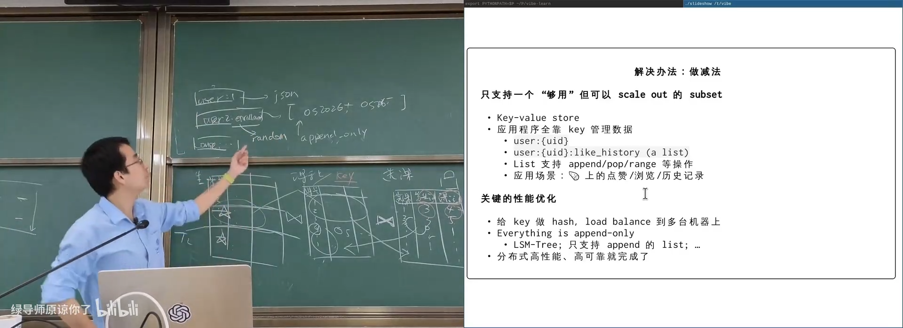
📷 Key 经过哈希后分配到多台机器，append-only 结构降低一致性成本
回到原视频 (01:14:30)
3.4 Redis：内存中的 Key-Value 与缓存
(参考时间: 01:15:50)
Redis 是一个内存 Key-Value 数据库，支持：
- String；
- List；
- Set；
- Hash；
- Sorted Set；
- Stream。
典型用途是缓存与写缓冲。例如统计点赞数：
- 每次点赞先在内存计数器上加一；
- 一分钟内可能累积数百万次；
- 定时把增量合并到持久数据库；
- 数据库只承受少量批量更新。
flowchart LR
USERS["大量用户点赞"] --> REDIS["Redis Counter / List"]
REDIS --> BATCH["周期性批量合并"]
BATCH --> DB["持久数据库"]
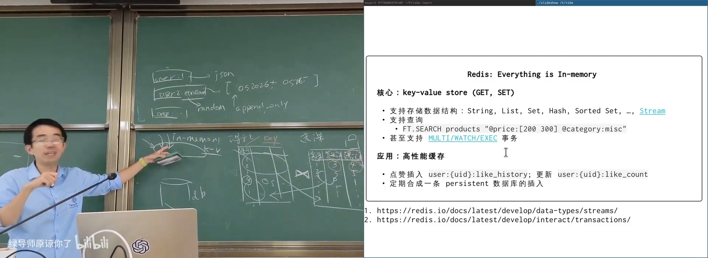
📷 Redis 把高频随机写入缓冲起来，周期性合成到持久数据库
回到原视频 (01:16:00)
这种设计的核心不是“数据永远不丢”，而是根据业务价值选择一致性等级。点赞数差几条通常可以接受，但所有点赞都执行完整事务会浪费大量资源。
3.5 NoSQL 与 NewSQL
(参考时间: 01:17:40)
人们仍然希望拥有比简单 Key-Value 更丰富的数据模型，于是出现多种折中：
- MongoDB：Document 数据库，Key 对应 BSON 文档，可以 append 消息、嵌套对象和数组；
- Cassandra：Column 数据库，使用 CQL，仍然保留 Table 风格，但只提供受控的 SQL 子集；
- Google Spanner、TiDB、CockroachDB：提供接近完整 SQL 的分布式数据库；
- TiDB：国产数据库出海的代表性案例之一。
例如 Cassandra 仍然可以写：
INSERT INTO messages
(user_id, message_id, content, timestamp)
VALUES
('1234567', now(), message, toTimestamp(now()));
flowchart TD
KV["Key-Value"] --> DOC["Document: MongoDB"]
KV --> COL["Column: Cassandra"]
KV --> NEWSQL["NewSQL: Spanner / TiDB / CockroachDB"]
DOC --> SUBSET["更受控的查询能力"]
COL --> SUBSET
NEWSQL --> FULL["接近完整 SQL + 分布式扩展"]
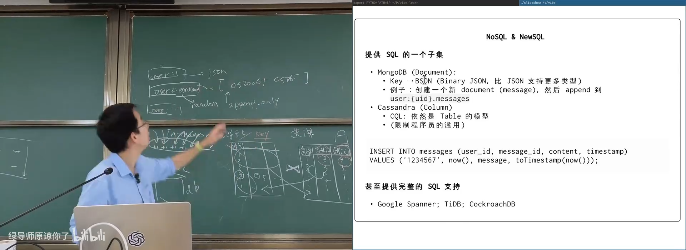
📷 NoSQL 与 NewSQL 在数据模型和查询能力之间做不同取舍
回到原视频 (01:18:10)
这些系统希望保留 SQL 的易用性，同时通过受控接口、分片和分布式共识降低滥用风险。数据库设计的核心始终是取舍：给应用提供多少能力，系统就要承担多少复杂性和性能风险。
3.6 Vector Database：把语义变成距离
(参考时间: 01:19:20)
传统数据库按字段、Key 和关系查询；向量数据库保存 Embedding，并按距离寻找相似对象。
flowchart LR
TEXT["文档 / 图片 / 代码"] --> MODEL["Embedding Model"]
MODEL --> VEC["高维向量"]
VEC --> VDB["Vector Database"]
QUERY["查询内容"] --> QVEC["查询向量"]
QVEC --> ANN["Approximate Nearest Neighbor"]
VDB --> ANN
ANN --> RESULT["语义相近的结果"]
课堂演示把课程提纲、每页幻灯片描述或每一讲的文档交给一个小型模型，生成高维向量。向量之间可以用：
- 点积；
- 余弦距离；
- 欧氏距离；
来衡量相似度。距离越近，通常意味着内容越相关。
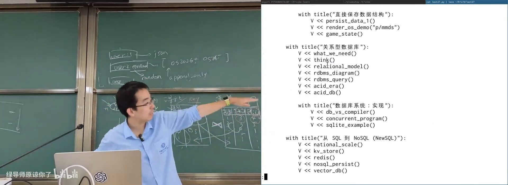
📷 Embedding 把文本映射到高维空间，距离表达语义相似度
回到原视频 (01:19:40)
讲师还展示了课程各讲的 Embedding 距离图：
- 并发相关的第 13 到第 21 讲聚在一起；
- 文件系统和数据库相关的第 24 到第 27 讲形成相近区域；
- 第 4 讲的 Agentic AI 内容比较像一座孤岛。
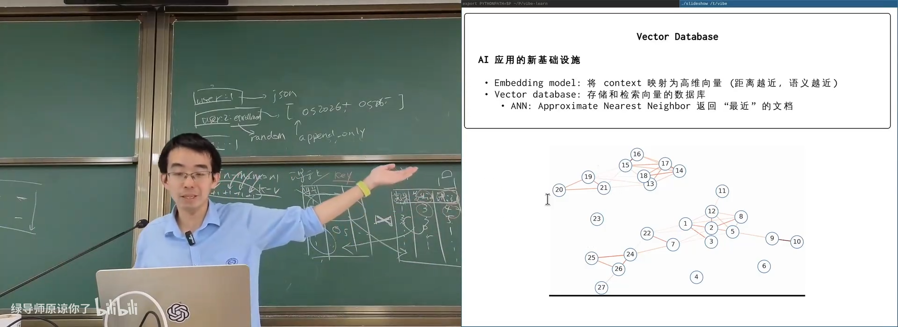
📷 课程各讲的向量距离能够自动呈现出主题聚类关系
回到原视频 (01:20:40)
向量数据库的典型需求是：
- 存储数百万到上亿个向量；
- 每个向量可能有几千维；
- 给定查询向量，快速查找最近邻；
- 使用 ANN 近似算法换取可扩展性；
- 返回“最近”的文档、图片、商品或论文。
未来的数据系统很可能同时包含：
- 结构化表；
- Key-Value 索引；
- append-only 事件流；
- 向量索引；
- 全文索引。
每条记录都可以拥有一个语义向量，使系统既支持精确查询，也支持模糊的语义检索。
4. 总结：所有应用最终都是数据结构的 CRUD
(参考时间: 01:22:20)
这一课从“文件系统是磁盘上的数据结构”出发，一路走到数据库和向量检索。
flowchart TD
FS["文件系统"] --> FILE["目录与文件"]
FS --> MMAP["mmap + WAL"]
FILE --> RDBMS["关系型数据库"]
MMAP --> RDBMS
RDBMS --> SQL["Table / Join / ACID"]
SQL --> CONCURRENCY["2PL / MVCC / Recovery"]
RDBMS --> KV["Key-Value"]
KV --> REDIS["Redis / Cache"]
KV --> NOSQL["MongoDB / Cassandra"]
KV --> NEWSQL["Spanner / TiDB / CockroachDB"]
RDBMS --> VECTOR["Vector Database"]
VECTOR --> SEMANTIC["Embedding / ANN"]
核心结论：
- 应用程序把物理世界投影成一个可持久化的数据结构；
- 文件系统适合小规模、工具友好、Agent 友好的系统；
- mmap 和 WAL 可以直接在文件上实现自定义数据结构与恢复协议；
- 关系数据库把数据表达、查询优化、事务、并发控制和恢复封装成通用服务；
- SQL 的强大也使查询滥用成为长期存在的性能问题；
- NoSQL 通过减少接口能力换取扩展性；
- NewSQL 试图重新组合 SQL 与分布式能力；
- Vector Database 为 AI 应用提供语义检索基础设施。
无论技术形态如何变化，数据库的本质仍然是一个“非常非常好的数据结构”：它让应用程序不必反复发明持久化、并发和崩溃恢复，而是用统一接口管理不断变化的业务事实。
附：官方参考与延伸阅读
- A Relational Model of Data for Large Shared Data Banks
- Single-Level Store
- Memory-Mapped Data Structures
- CMU 15-445: Database Systems
- SQLite 官方网站
- Redis Streams
- Redis Transactions
- 南京大学教务系统
官方课程资料：
版权与署名：本讲课程材料由蒋炎岩（jyy）编写。课程讲义与幻灯片采用 Creative Commons BY-NC 4.0 许可；本电子书保留课程出处、作者署名与许可说明。